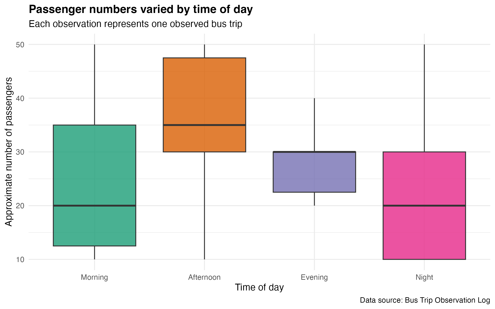
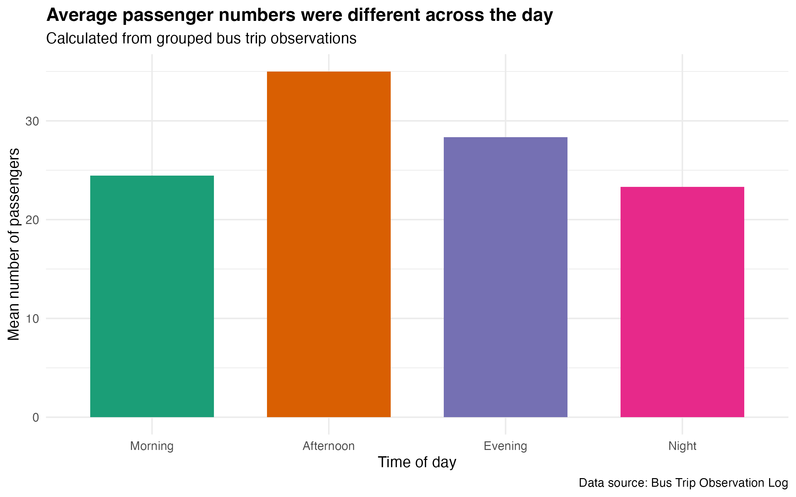
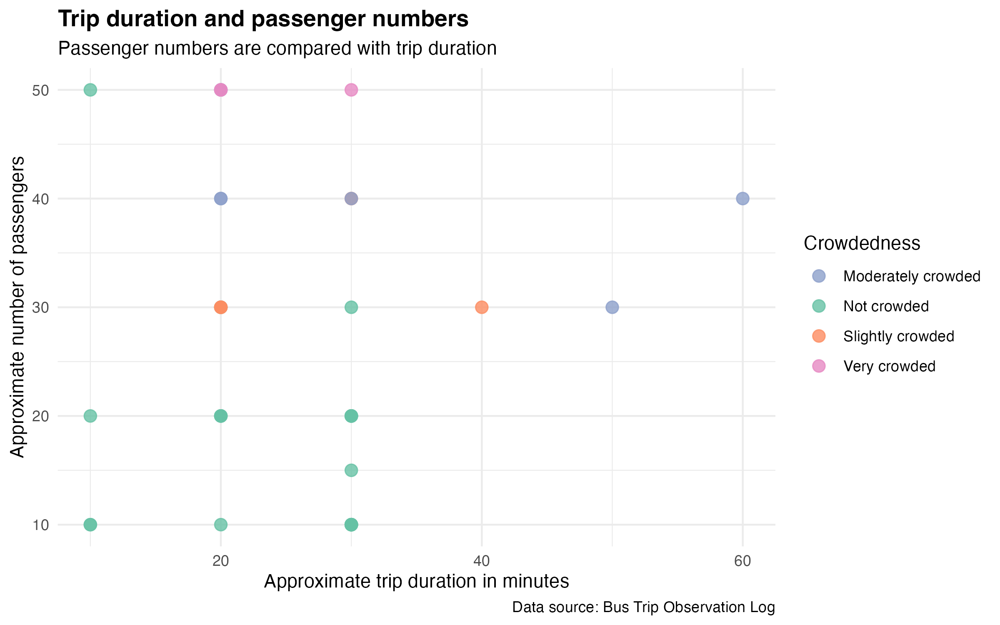

This visual data story is based on my Bus Trip Observation Log. Each row of the dataset represents one observed bus trip. I recorded the time of day, the approximate number of passengers, whether an empty seat was available, the approximate trip duration, and how crowded the bus felt overall.
The purpose of this story is to explore how bus passenger numbers and crowdedness changed across different trips. Rather than using survey opinions, the data were collected from observations of bus trips.

This plot compares the approximate number of passengers across different times of day. It helps show whether some parts of the day tended to have more passengers than others. This is useful because time of day is likely to affect how busy a bus feels.

The second plot summarises the data by calculating the average number of passengers for each time of day. This gives a clearer overall comparison between morning, afternoon, evening, and night observations.

This plot compares trip duration with passenger numbers. The colour shows the reported crowdedness of the bus. This helps explore whether longer trips also appeared to have more passengers or feel more crowded.
This final plot uses the timestamp information from the Google Form responses. The timestamp was converted into dates using R, so the number of observations collected on each date could be shown. This helps explain how the dataset was built over time.
Overall, this visual data story shows that bus trips can differ in passenger numbers, duration, and crowdedness. Looking at the data visually makes it easier to compare different bus trip conditions and understand patterns in the observations.